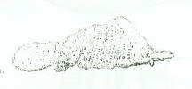

CATALOGUE
OF THE
MUSEUM
OF
LONDON ANTIQUITIES
COLLECTED BY, AND THE PROPERTY OF
CHARLES ROACH SMITH,
HONORARY MEMBER OF THE ROYAL SOCIETY OF LITERATURE; OF THE
NUMISMATIC SOCIETY
OF LONDON; OF THE SOCIETIES OF ANTIQUARIES OF NEWCASTLE-UPON-TYNE AND OF
SCOTLAND; FELLOW OF THE ROYAL SOCIETY OF ANTIQUARIES OF THE NORTH; MEMBER
OF THE SOCIETIES OF ANTIQUARIES OF FRANCE, OF NORMANDY, OF PICARDY, OF THE
WEST, OF THE MORINI; MEMBER OF THE SOCIETY OF EMULATION OF ABBEVILE;
HONORARY MEMBER OF THE ARCH�OLOGICAL
SOCIETIES OF MADRID, WIESBADEN,
MAYENCE, TREVES, CHESTER, CHESHIRE AND LANCASHIRE, SUFFOLK, SURREY, ETC., ETC.
PRINTED FOR THE SUBSCRIBERS ONLY
M.DCCC.LIV.
p.124-129
623. SHOE, of the time of Edward III. Plate XII, engraved of the actual size. This is the finest example of embossed leather in the collection. It is almost the entire upper portion of a shoe, to which the costume of the figures, and other peculiarities, enable us to assign a date. The designs are in good taste, and executed with great care and skill; and in examining their minute and finished elaboration, we can but wonder at the infinite pains bestowed on a portion of the apparel the least adapted for that close inspection which is necessary for the lull appreciation of its artistic merits. It must, of course, have been of a rare and costly sort ; and could only have been used by a person, probably a female, of rank or of affluence. The central circle of the left half is, unfortunately, wanting. In the angles are a lion, part of a recumbent male figure with a greyhound, and a representation of the well-known story of the hunters ensnaring the unicorn by the agency of a virgin. On the outer border is the motto, Amor . vincit . omnia; on the horizontal border, Honny . sont qui . mal . y . pense; on the transverse one, the concluding words alone are legible: ... mal . penser. The legend on the scrolls above the central design is also defective; what remains seems to read, . . conneres sa vous t-is pourra au-.
The other half, that to the right of the plate, exhibits, in the centre, a male and female figure seated. Between them is a tree, and the male personage seems offering some fruit to his companion. To this scene the inscription on the scrolls seems to allude, although it cannot be satisfactorily made out : nue : vous : pens en gre a : sera : fait : gaies : chiens. The scrolls are supported on one side by a youthful female figure holding a branch, and on the other by a young man holding a circular object, probably a mirror; the subordinate objects are a dog, and a child or a monkey. The mottoes on the sides are Amours . merci . je . vous . en . pry. Par . qua ma . foy . vous ..... and ..... faid . amer. [MME 1856, 7-1, 1675*]
624. SHOE of the time of Edward III. Plate XIII, fig. I. This specimen, though inferior in richness of decoration to No. 623, is of a very elegant pattern, and is quite perfect.
625. SOLE of a shot, of the same period, covered with a very elegant pattern. Plate XIII, fig. 2. [MME 1856, 7-1, 1690*]
626. SHOE, of reticulated work. Plate XIII, fig. 3. [MME 1856, 7-1, 1692*]
627. SHOE, with open work, possibly of rather earlier date. Plate XIII, fig. 4.
628. UPPER PART OF A SHOE, of a different pattern and equally chaste and tasteful.
The foregoing examples of a very extensive collection will convey a good notion of the skill and labour bestowed on the shoes of time time of the third Edward, and also anterior to his reign. In an order from King John for several articles of dress occur four pairs of shoes for women, and one pair to be ornamented with fret-work, fretatus de giris, such as we may consider some of the examples now under our eyes. Illuminated manuscripts, paintings, and sculptures of the fourteenth century yield, however, the most copious evidence of the exuberant character of the ornamentation of shoes. The mural paintings of St. Stephen�s Chapel, Westminster, now destroyed, afforded excellent illustrations. Drawings of these are preserved in the meeting room of the Society of Antiquaries of London, and some of them will be found copied in Mr. Fairholt�s Costume in England, p. 447. From these specimens we can well comprehend the full force of Chaucer�s description of the dress of the gay young priest,�
� With Paules windows carven on his shoes.�
It must be considered that the effect of� the open-work of shoes of this description was heightened by the white and coloured hose worn by the wealthier classes. [MME 1856, 7-1, 1708*]

Length 12 inches
629. ANOTHER example of the shoes of this period. This, and also fig. 3, plate XIII were fastened round the instep with a buckle.
630. PEAKED, or LONG-POINTED SHOE, of the close of the reign of Edward III, and subsequent. (Plate XIV, fig. 1.) In the reign of Richard II, this fashion flourished in its fullest extravagance. The extreme length of these shoes required that the points should be stuffed; and, accordingly, some of these, found in London, were filled with fine moss. This fact will serve to explain a French saying which, without reverting to the customs of a period long passed away, it is impossible to understand. Speaking of a rich man, the French say in common parlance, �il a du foin dans ses bottes�; literally, �he has hay in his boots�. The application of the saying is not very obvious; nor is it apparent why hay in the shoes or boots should be a natural consequence of riches. Examine our pointed shoes of the fourteenth century, and it will be at once fully understood that none but rich men could possibly wear such cumbersome coverings; and that as they did wear them, they were compelled to submit to the stuffing of moss and of hay; and thus the saying becomes perfectly applicable and intelligible.
631. PEAKED SHOES of various sizes, and slightly differing in shape from fig. 1, plate XIV. It is worthy of notice, that most of these, as well as time still earlier specimens, arc made �� right and left��, as is the fashion of the present day. Shakespeare�s description, therefore, of the tailor�
"Standing on slippers which his nimble haste
had falsely thrust upon contrary feet,"
King John, Act iv, Sc�. 2.
is perfectly true to the custom of time period, although Dr. Johnson questioned its propriety. [MME 1856, 7-1, 1718?*]
632. POINT OF A SHOE, nine inches in length, and retaining its original padding of fine moss. It affords an excellent example of the ridiculous extravagance of the fashion of long-pointed shoes in the reign of Richard II, when it is said they were occasionally so long as to be forced to be chained to the knee. [MME 1856, 7-1, 1740*]
633. SHOE WITH A HIGH HEEL, the interior of which is of cork, probably of the time of Henry VII. It seems to be of the transition period, when the pointed shoe was changing to the opposite fashion of extreme breadth; fig. 4, plate XIV.
634. CLOGS, OF WOOD. These specimens are not perfect; they accord with representations in illuminations of clogs of the time of Edward IV.
635. SHOES of the time of Henry VIII, and of the latter part of the reign of Henry VII. They are slashed or cut open in various patterns, of which fig. 2, plate XIV, may serve as an example.
636. SHOES of the same period, without ornament, and of great breadth at the toe; fig. 3, plate XIV.
637. A SHOE of the same kind, measuring the extraordinary length of sixteen inches.
638. SHOES of the time of Elizabeth and James I.
*Modern British Museum Catalogue numbers for these items.
{kind=link}
{kind=link}
{kind=link}
{kind=link}
{kind=link}
{kind=link}
{kind=link}
{kind=link}
{kind=link}
{kind=link}
{kind=link}
{kind=link}